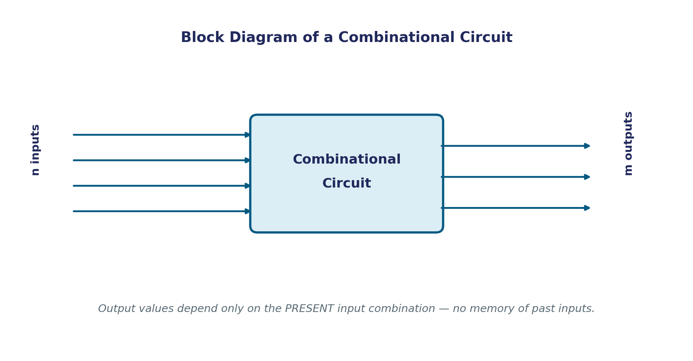

Combinational Circuits
Unit 1 built the vocabulary — bits, gates, Boolean algebra, K-maps. This unit is where that vocabulary starts building actual functional circuits: adders, comparators, decoders, encoders, multiplexers — the components every digital system, including the CPU you'll study later in this course, is assembled from. Every one of them shares a single defining property, and this page is about exactly that property: what it means for a circuit to be combinational.
Definition
A combinational circuit is an interconnection of logic gates whose output values, at any instant, depend only on the present combination of input values — never on what the inputs were doing a moment ago, and never on a clock signal. Feed the same inputs in twice, at different times, and a combinational circuit always produces exactly the same outputs.
This sounds almost too simple to state, but it's precisely what separates every circuit in this "Combinational Logic" group from the "Sequential Logic" group later in this unit:
The n-Input, m-Output Block Model
Every combinational circuit, no matter how complex internally, fits the same general shape: n binary input signals go in, m binary output signals come out, and each output is some Boolean function of the n inputs — computed purely by a network of logic gates with no feedback path from a later gate back to an earlier one.

The "no feedback" condition is what guarantees the outputs settle to a stable value shortly after the inputs are applied (the actual delay depends on how many gate levels a signal has to pass through, called propagation delay) — and then hold that value until the inputs change again. A circuit with a feedback loop can instead oscillate, or hold a value even after its inputs change, which is exactly the memory behavior a sequential circuit relies on and a combinational circuit must never exhibit.
Truth-Table Specification
For n input variables, there are exactly 2ⁿ possible input combinations, and a combinational circuit produces exactly one output combination for each — which is precisely why a truth table can fully specify a combinational circuit's behavior, and why every combinational circuit can equally be described by a set of Boolean functions, one per output. These two descriptions (table and equations) are always interchangeable — the rest of this course moves freely between them, whichever is more convenient for the task at hand.
Worked Example — Counting Rows
A magnitude comparator (a later topic in this unit) that compares two 4-bit numbers has 8 input lines (4 bits for each number). Its complete truth table therefore has 2⁸ = 256 rows — every one of those 256 rows must have a defined output, or the specification is incomplete. This is a useful sanity check to run on any combinational circuit before starting a design: count the inputs, compute 2ⁿ, and that's exactly how many rows a truth table for it would need.
Common Pitfalls
- Assuming "more gates" automatically means "not combinational." Gate count has nothing to do with it — a 50-gate circuit with no feedback is just as combinational as a single AND gate. The only thing that matters is the absence of memory/feedback.
- Forgetting that a truth table isn't complete until every one of the 2ⁿ input rows is assigned an output — leaving rows unspecified makes the circuit's behavior ambiguous for those inputs, unless they're explicitly marked as don't-cares (Unit 1).
- Confusing "no clock" with "instantaneous." A combinational circuit still takes a small, nonzero amount of time (propagation delay) for its outputs to settle after the inputs change — it just has no memory of what the inputs were before that change.
Applications
- Every circuit on the remaining pages of this unit — adders, comparators, decoders, encoders, multiplexers — is a combinational circuit in exactly this sense, differing only in how many inputs/outputs they have and what function they compute.
- A CPU's ALU (studied later in this course) is, at its core, one very large combinational circuit: given the two operand registers and an operation code as inputs, it produces the result as output, with no memory of the previous instruction's operands.
- Hardware description languages (Verilog, VHDL) distinguish combinational and sequential logic explicitly in their syntax (e.g., Verilog's
always @(*)vs.always @(posedge clk)) — understanding which category a piece of logic belongs to is a prerequisite for writing correct HDL code, not just a classroom distinction.